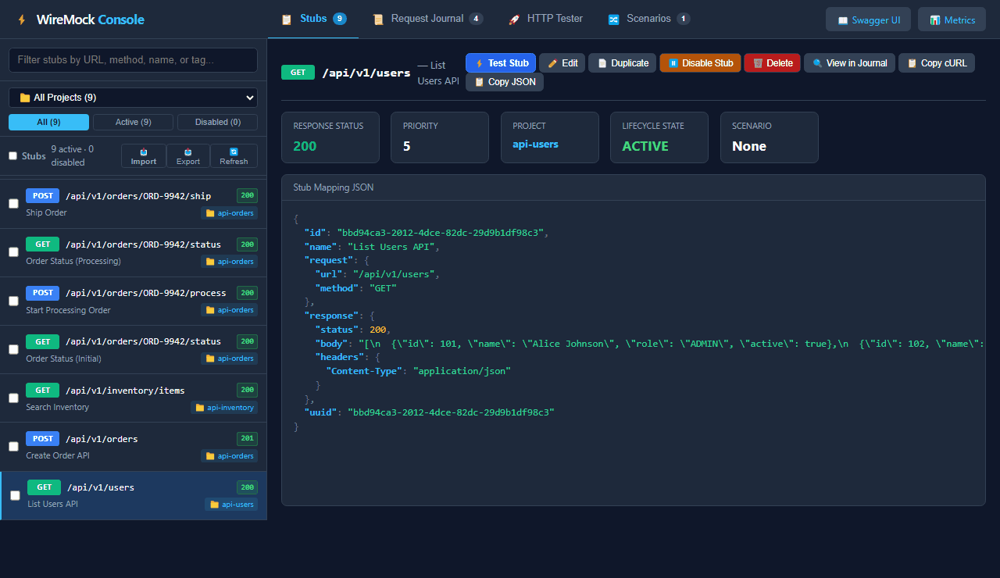
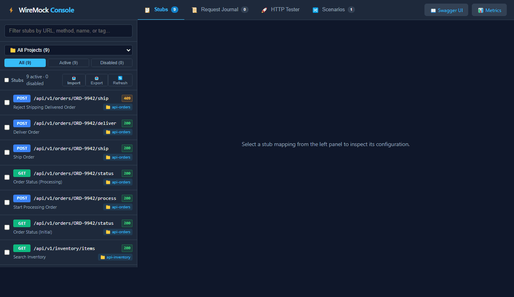
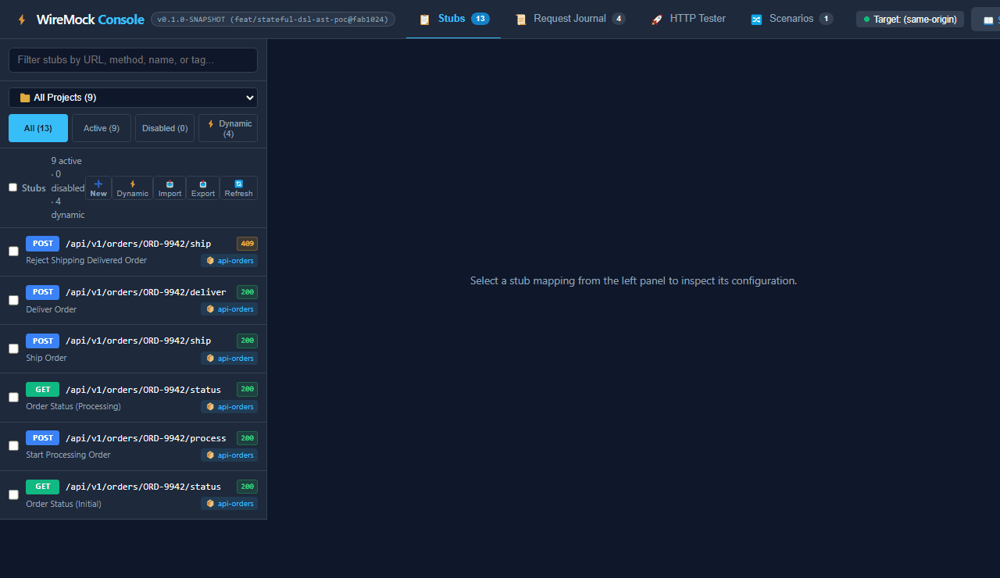

WireMock Extended
The production-grade, zero-cloud API simulation studio for JVM & Standalone.
Embedded Web UI, instant OpenAPI mocks, & flake-free stateful workflows.
🖥️ Embedded UI
Pure Vanilla ES modules, zero NPM dependencies. Stub explorer, scenario DAG, and HTTP tester.
📑 OpenAPI Synthesis
Instant stub generation from OAS 3.0/3.1 specs with live proxy traffic snapshotting.
⚡ Dynamic State AST
RCE-safe sealed AST engine with X-Correlation-Id isolation to end CI flakes.
📊 Observability
Single-line JSON logging with MDC propagation and OpenTelemetry / Prometheus scrape.
Why Legacy Mocking Slows Teams Down
Engineering teams waste hundreds of hours fighting brittle mock setups and flaky CI pipelines.
❌ Global Scenario Collisions
WireMock scenarios share global state. When parallel test runners mutate the same scenario name concurrently, tests overwrite each other and cause non-deterministic CI flakes.
❌ Blindness & Tool Sprawl
WireMock OSS lacks a built-in web console. Developers are forced to juggle Postman, inspect raw JSON mapping files, or sift through multiline unstructured logs.
❌ Cloud & Compliance Blockers
Commercial SaaS platforms (WireMock Cloud) require sending proprietary API schemas and payloads to third-party clouds—a strict non-starter in banking, healthcare, and defense.
Architecture: Modular Yet Unified
Available as individual lightweight extensions or a 1-line All-in-One meta-bundle.
📦 All-in-One Meta Bundle (wiremock-extension-bundle)
Automatic SPI auto-discovery for WireMock Standalone. Drop a single JAR onto the classpath and immediately unlock UI, metrics, logging, OpenAPI, and stateful simulation.
🧩 Pick & Choose Modularity
In lightweight microservice testcontainers, pull only what you need (e.g. JSON MDC logging or OpenTelemetry) without bringing in UI assets or OpenAPI parsers.
⚡ SPI Extension Factory Topology
// 100% Standard WireMock Extension SPI
wiremock-extension-bundle
├── wiremock-extension-json-logging (MDC filter)
├── wiremock-extension-otel (Prometheus)
├── wiremock-extension-openapi (OAS 3.0/3.1)
├── wiremock-extension-stateful (AST engine)
└── wiremock-extension-ui (Vanilla SPA)Embedded Developer Console
Zero NPM, pure native ES modules, running directly inside WireMock at /__admin/ui/.
🔍 Instant Stubs Explorer & Filter
Real-time fuzzy search by path, method, and tags. Filter by Active, Disabled, and Dynamic stubs with project-level lifecycle grouping.
🚀 Integrated HTTP Tester
Execute live API requests right inside the browser with syntax-highlighted responses, header inspectors, and execution timers.
🔀 Scenario DAG Visualizer
Auto-renders state machine transitions into interactive directed acyclic graphs (DAGs) with live state badges and reset controls.

OpenAPI Ingestion & Live Proxy Snapshotting
From API specification to offline simulation in less than 30 seconds.
📑 Instant Spec Ingestion
Paste any OpenAPI 3.0 or 3.1 YAML/JSON. Synthesizes format-aware mock data (UUIDs, timestamps, emails, regexes) automatically.
🌐 Live Proxy Mode
Point WireMock to an upstream staging or production service. All incoming calls pass through transparently to live servers.
📷 Traffic Snapshot & Offline Flip
One click captures proxied traffic into DISABLED stubs. Flip project mode to STUBS MODE to sever upstream dependencies and run fully offline!

Dynamic AST Stateful Simulation
Solves combinatorial state explosion & parallel CI collisions via X-Correlation-Id.
🛡️ 100% RCE-Safe Sealed AST
Java 21 sealed interfaces (AstExpression, AstMutation). Zero arbitrary code execution risk, unlike JavaScript or Groovy scripting.
📦 In-Memory Collection Primitives
Append items, mutate lists, enforce cross-entity invariants (e.g. "Cannot close case while child tasks are pending").
🔒 Multi-Tenant Correlation Isolation
State is scoped to X-Correlation-Id. 100 parallel tests can run against the same WireMock instance without collision!

Production Logging & OpenTelemetry
No more grep-debugging multiline logs. Built for Datadog, Grafana, and ELK.
📑 Single-Line Structured JSON Logging
Emits machine-parseable JSON lines with automatic MDC header extraction:
{
"timestamp": "2026-10-10T06:15:00Z",
"method": "POST",
"url": "/api/v1/orders",
"status": 201,
"duration_ms": 12,
"x_correlation_id": "test-run-482",
"x_tenant_id": "enterprise-acme"
}📊 In-Process Prometheus / OTEL Metrics
Scrape endpoint at /__admin/metrics/prometheus:
# HELP wiremock_requests_total Total HTTP requests
# TYPE wiremock_requests_total counter
wiremock_requests_total{status="201",method="POST"} 42
# HELP wiremock_request_duration_seconds Histogram
wiremock_request_duration_seconds_bucket{le="0.05"} 39
wiremock_request_duration_seconds_sum 0.84Directly visualizable in Grafana dashboards with zero external sidecars.
Competitive Landscape
How WireMock Extended / Plus compares across the industry.
| Capability | WireMock OSS | WireMock Cloud | Mockoon | Microcks | WireMock Plus / Extended |
|---|---|---|---|---|---|
| Deployment Model | Self-Hosted | SaaS Cloud | Desktop App | Kubernetes / K8s | Self-Hosted / Zero-Cloud |
| Embedded Web Console | None | Yes (Cloud) | Yes (Electron) | Yes (Web) | Yes (Pure Vanilla ES6) |
| OpenAPI Ingestion | Manual / Plugin | Yes | Partial | Yes | Yes (Live Proxy + Snap) |
| Stateful Parallel Isolation | No (Global Collision) | Manual Scenarios | No | Partial | Yes (X-Correlation-Id AST) |
| JVM / JUnit Embedding | Native | Hybrid Runner | CLI Only | Testcontainers | Native JVM 21 & CLI |
| Licensing & Compliance | Free Apache 2.0 | Paid / SaaS Risk | Free MIT | Free Apache 2.0 | 100% Free Apache 2.0 |
Get Started in Under 60 Seconds
Zero architectural overhaul. Works with your existing WireMock stubs and test suites.
Option A: Standalone CLI Runner
Run with your existing WireMock standalone JAR:
java -cp "wiremock-extension-bundle-0.1.0.jar:wiremock-standalone-3.12.1.jar" \
com.github.tomakehurst.wiremock.standalone.WireMockServerRunner \
--port 8080 --verbose
✓ Instantly opens UI at http://localhost:8080/__admin/ui/
Option B: Gradle / Maven Dependency
Add to your test dependencies:
// Gradle build.gradle
testImplementation 'io.github.mattiasgreen:wiremock-extension-bundle:0.1.0'
// Standard JUnit 5 @WireMockTest picks up all extensions via SPI
@WireMockTest(httpPort = 8080)
class OrderServiceTest { ... }Roadmap & Next Steps
Join us in making API simulation effortless, deterministic, and fast.
🗺️ Near-Term Roadmap
- OpenAPI Contract Validation: Rejection of non-conforming requests.
- Stub Persistence: Storing disabled states and session snapshots to disk.
- Visual Stub Form Builder: No-code stub authoring in the web UI.
- Identity Provider Mock Preset: Mock OAuth2 / OIDC JWKS token generator.
Experience It Live Right Now
Explore the embedded console and test the interactive workflow:
🚀 Launch WireMock Console
Repository: github.com/mattiasgreen/wiremock-extensions